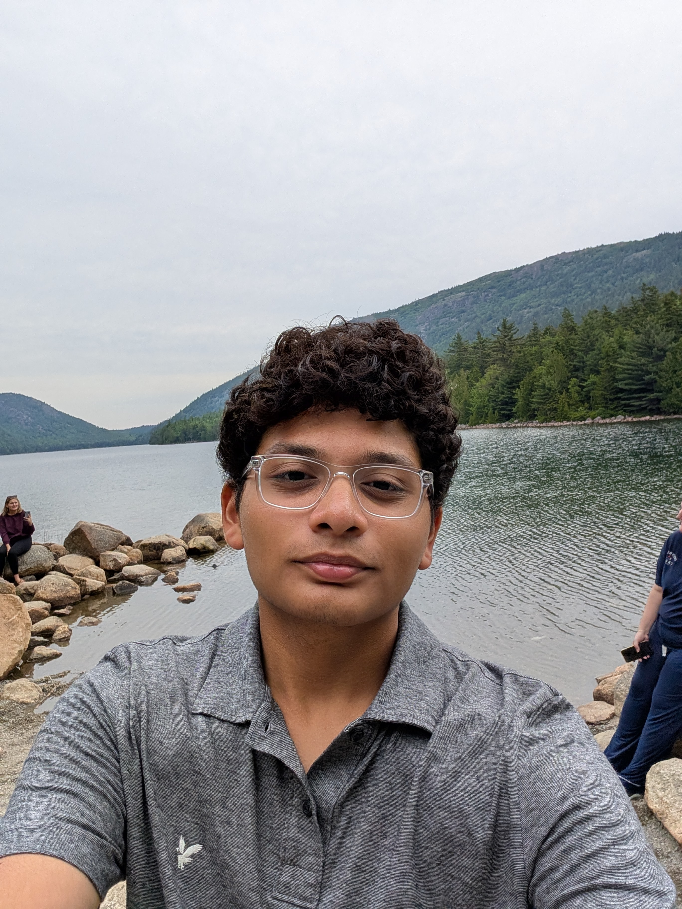

Hey, I'm Vaibhav.
I'm a high school senior passionate about robotics, embedded hardware, and agentic AI. I believe in peeling back layers of abstraction to build real solutions with my own hands—whether that's 3D-printing a motorized face-tracking monitor arm with carbon-fiber PETG, coding autonomous pathfinding for NASA satellites, or developing AI agents that help makers design hardware. When I'm not in the workshop, you'll find me on the tennis court, leading our school Video Club, or mentoring younger students.
Sunflower: Robotic Face-Tracking Monitor Arm
Engineered an autonomous face-tracking robotic monitor arm. Custom-modeled in FreeCAD with hollow wiring channels and 3D printed with carbon-fiber PETG on a Bambu Lab A1 using a hardened steel nozzle. Solved the MediaPipe Z-depth perspective jitter issue by creating a deadband margin filter and center-of-face tracking algorithm, driving motors with an Arduino.
MIT & NASA Zero Robotics Champion
Won 1st place nationwide! Programmed autonomous C++ navigation algorithms deployed live on Astrobee free-flying micro-satellites aboard the International Space Station with NASA astronaut Dr. Don Pettit.
DIY Partfinder: Agentic AI Recommender
Built an Agentic AI for DIY makers that reasons through mechanical constraints (weight, torque) and electrical factors (voltage, current, motor compatibility) to generate component lists, specs, buy links, and build steps. Published on GitHub with an interactive demo.
Education & Coursework
Specialized academy curriculum, honors, and academic coursework.
Glen Gardner / Whitehouse Station, NJ
Admitted to the Varsity Computer Science and Applied Engineering Academy (Hunterdon County Academies) — a competitive 4-year specialized engineering curriculum in hardware prototyping, algorithms, design thinking, and systems integration.
Rigorous STEM Coursework
Focusing on advanced physical sciences, university-level mathematics, and engineering:
Honors & Achievements
Competitions, leadership milestones, and academic awards.
International Space Station (ISS)
Co-programmed autonomous navigation algorithms in C++ deployed directly onto Astrobee robotic satellites inside the ISS, tested and broadcast live with NASA astronaut Dr. Don Pettit.
Google & Kaggle Capstone
Earned official course badge for building "DIY Partfinder," an agentic AI recommender that reasons across mechanical and electrical constraints to generate DIY build guides.
State Leadership Conference
Earned top 8 standing across New Jersey after competing in network defense, encryption methods, cyber ethics, and vulnerability analysis.
College Board
Awarded the Rural and Small Town National Recognition Award by College Board for outstanding academic performance on the PSAT/NMSQT.
Voorhees High School Chapter
Elected Vice President to organize school-wide peer tutoring programs, run chapter meetings, and coordinate service initiatives across the student body.
Voorhees High School
Awarded our high school's top media honor by faculty and administration for excellence in directing school broadcasts, filming graduation, live-stream production, and video editing.
National Merit Scholarship Program
Recognized as a Commended Scholar with a 1440 PSAT 11 score, placing in the top 1% nationwide among 1.5 million entrants.
Varsity CS & Applied Engineering
Selected into our district's competitive 4-year specialized STEM track focusing on embedded electronics, robotics integration, and algorithmic design.
Community & Volunteering
Youth mentorship, sports coaching, and community service.
Camp Assistant & Teacher Assistant
Dedicated 81 leadership hours assisting summer art camps, guiding elementary students through creative hands-on projects, managing daily classroom operations, and keeping campers engaged.
Cultural & Community Engagement
Volunteered 21 hours supporting cultural assemblies, organizing community gatherings, and assisting in event logistics and meal distributions.
Athletic Mentor
Coached rising 8th graders preparing for high school tennis, running skill-building drills, teaching proper stroke mechanics, footwork, and encouraging positive sportsmanship.
Literacy Volunteer
Read one-on-one with elementary students every week at the local library, helping them build reading confidence, phonics skills, and an early excitement for books.
Projects & Experience
Robotics builds, startup internship lead, and software tools.
Sunflower — Robotic Face-Tracking Monitor Arm
Engineered a motorized monitor arm that follows the user's face in real-time. Modeled custom hollow arm segments in FreeCAD with internal wiring passages, 3D printed with PETG-CF on a Bambu Lab A1 using a hardened steel nozzle, and integrated Google MediaPipe with a custom perspective deadband filter to eliminate motor jitter.
Techthought.org — Software & Electronics Intern Lead
Promoted to intern team lead for summer 2026. Built Python automation for news API posting (+100 social media followers in 2 weeks), created a GUI Agent, configured Linux OS & virtual machines, tested Raspberry Pi GPIO current draw under load, and implemented team sprint logs, calendars, and GitHub versioning.
DIY Partfinder — Agentic AI Hardware Recommender
Built for Google's 5-Day Intensive AI Hackathon on Kaggle. Developed an agentic AI that takes any DIY hardware concept and reasons through mechanical constraints (weight, torque) and electrical factors (voltage, current) to output parts lists, specs, purchase links, and step-by-step build guides.
Voorhees Tennis Team Portal
Designed and deployed a responsive web app for our boys' varsity tennis team to publish match schedules, track player stats, and deliver roster announcements.
Cornell High School Coding Competition
Represented Voorhees High School in Cornell's annual competitive programming contest, tackling multi-step algorithmic optimization and data structure challenges under timed rounds.
Voorhees Video Club President & Videographer
Direct our school's broadcast crew, filmed and livestreamed the 2026 graduation ceremony, produce morning school announcements, and recipient of the school Video Production Distinction Award.
Project Build Logs
Real-time build notes, hardware logs, and project breakdowns.